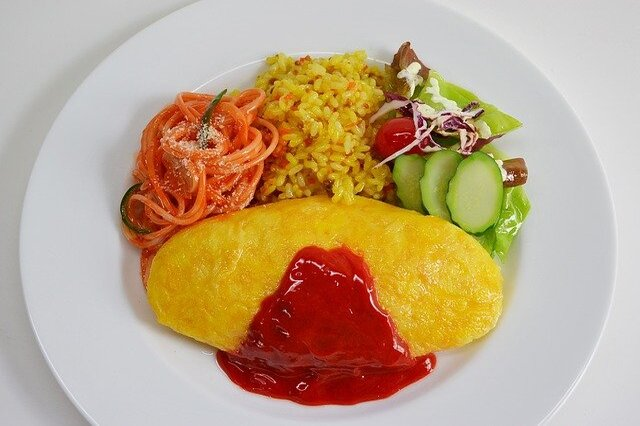

Omurice Recipe

Description
A Japanese dish consisting of an omelette made
with fried rice and thin, fried scrambled eggs,
usually topped with ketchup.
Ingredients
- Vegetable oil
- Cooked rice
- Green onion
- Onion
- Mushrooms
- Carrots
- Chicken
- Eggs
- Milk
- Soy Sauce
- Ketchup